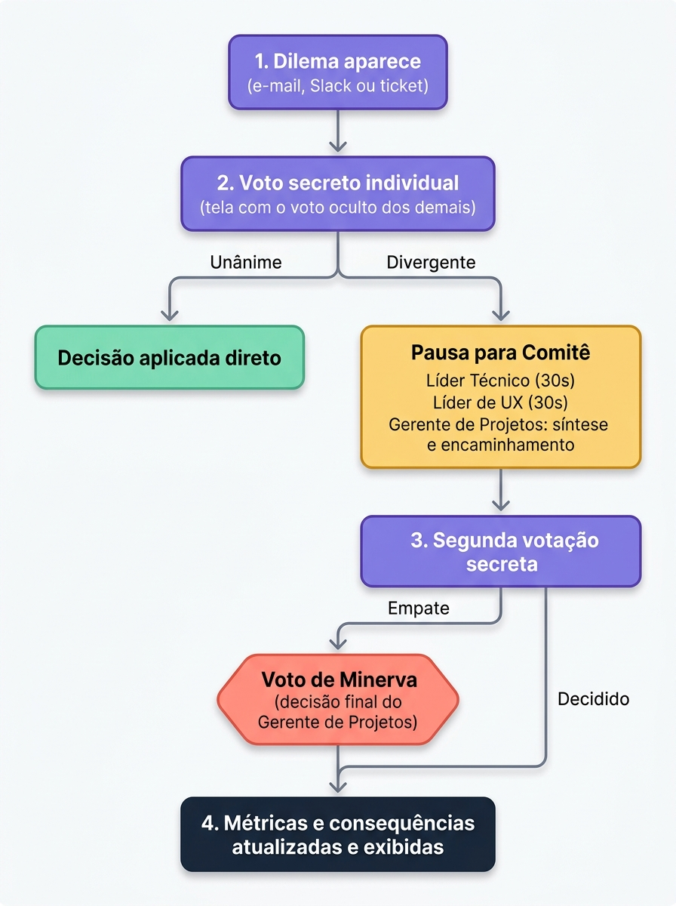

HardWorkManager é um jogo sério digital e colaborativo, estruturado em situações de decisão,
chamadas de dilemas, ambientadas no Domínio do Trabalho do Projeto - PMBOK® Guide 7ª Edição. As equipes assumem
papéis de liderança em um projeto fictício de modernização de um sistema acadêmico e enfrentam decisões
envolvendo prazo, qualidade, saúde da equipe e conhecimento organizacional.
O sistema do jogo (banco de 50 dilemas e sistema de consequências) roda inteiramente no navegador do aluno.
Após o carregamento inicial, a partida continua mesmo sem internet.
Recomenda-se aplicar o jogo em um laboratório de informática com pelo menos 15 computadores, de modo que cada
equipe utilize um dispositivo. A atividade também pode ser realizada em sala de aula, utilizando os notebooks,
tablets ou smartphones dos próprios alunos.
1.1 Dinâmica da jogabilidade em grupo
1 dispositivo físico por equipe (notebook, computador de laboratório, tablet ou smartphone).
Nas rodadas de voto individual, a tela exibe um aviso de sigilo e os demais integrantes não devem
visualizar a tela durante o voto.
Telas de votação coletiva, revelação e resultado são visualizadas por toda a equipe.
02
Objetivos de Aprendizagem
Ao final da atividade, o aluno deve ser capaz de:
Nível (Bloom)
O aluno será capaz de...
Onde isso aparece no jogo
Lembrar
Identificar vocabulário técnico: dívida técnica, aumento não planejado do escopo
(Scope Creep), colaboração entre membros da equipe (Swarming), definição de
concluído (Definition of Done), conhecimento tácito e concentração de conhecimento (silo de
conhecimento)
Textos dos dilemas e feedback de métricas
Compreender
Explicar a tensão entre entrega, qualidade, saúde da equipe e conhecimento organizacional
Painel de 4 métricas e suas variações
Aplicar
Argumentar em um debate estruturado defendendo um papel (Gerente de Projetos, Líder Técnico,
Líder de UX)
Tela de Apuração & Debate
Analisar
Identificar como uma decisão tomada para resolver um problema no curto prazo pode gerar uma
consequência
negativa ou diferente somente mais adiante.
Sistema de consequências
Cadeia pedagógica: Objetivo → conceito do PMBOK 7 → dilema do jogo → decisão
da equipe → métrica/consequência → reflexão pós-partida. Você pode usar esta cadeia como roteiro
mental ao conduzir a aula: cada intervenção deve reconectar um desses elos.
03
Público-Alvo, Pré-Requisitos e Organização da Turma
Item
Recomendação
Pré-requisito de conteúdo
Já ter tido ao menos uma aula introdutória sobre o Domínio Trabalho do Projeto do PMBOK 7. O jogo
consolida, não substitui, essa introdução.
Tamanho de turma ideal
15 a 40 alunos (5 a 10 equipes)
Fora dessa faixa
Ver Seção 13 - Adaptações
Organização física
Mesas ou cadeiras agrupadas de 3-4 lugares, com espaço para o professor circular entre as equipes
04
Relação com o PMBOK 7
O jogo é interdisciplinar: nem todo conceito abordado pertence estritamente ao Domínio Trabalho do Projeto. Esta
seção separa o que é núcleo do domínio do que dialoga com outros domínios e princípios, evite apresentar todos
os conceitos como "Trabalho do Projeto" para não introduzir um erro conceitual em sala.
4.1. Módulos temáticos do jogo e sua relação com o PMBOK® 7
O HardWorkManager foca na operacionalização cotidiana da equipe de projetos no Domínio Trabalho do Projeto
(Project Work Performance Domain) do PMBOK 7ª Edição (Seção 2.5). O catálogo de 50 dilemas está organizado
em cinco módulos temáticos:
Módulo Temático no Jogo
Relação com o PMBOK® 7
Foco de Aprendizagem Prática
1. Adaptação dos Processos (Tailoring)
PMBOK® 7 - Seção 2.5.1: adaptação dos processos às necessidades do projeto e eliminação de atividades
que não agregam valor
Avaliar quais processos são realmente necessários, reduzir atividades burocráticas e adaptar a forma
de trabalho às necessidades do projeto.
2. Comportamentos de Liderança
PMBOK® 7 - Seção 2.5.3: liderança e organização do trabalho da equipe
Desenvolver uma liderança que proteja a equipe de demandas não planejadas, promova uma distribuição
adequada do trabalho e estimule a análise dos problemas sem buscar culpados.
3. Pensamento Sistêmico
PMBOK® 7 - Seção 2.5.2: análise das relações entre as diferentes restrições do projeto
Compreender que uma decisão em uma parte do projeto pode afetar outras áreas, considerando as relações
entre prazo, qualidade, recursos, tecnologia e capacidade da equipe.
4. Gestão de Mudanças
PMBOK® 7 - Seção 2.5.7: gerenciamento e adaptação às mudanças que afetam o projeto
Avaliar solicitações inesperadas, analisar seus impactos no projeto, negociar mudanças e evitar
alterações de escopo sem considerar suas consequências.
5. Qualidade e Excelência
PMBOK® 7 - Seção 2.5.1: qualidade do produto e das entregas
Equilibrar velocidade e qualidade, identificar problemas que podem comprometer as entregas e
estabelecer critérios para considerar uma entrega concluída.
05
Glossário - Jogo ↔ PMBOK 7 ↔ Prática de Software
Termo no jogo
Conceito no PMBOK 7
Contexto de desenvolvimento de software
Sistema de consequências
Consequências que podem surgir após uma decisão tomada anteriormente
Uma decisão de curto prazo pode aumentar a dívida técnica e gerar problemas posteriormente
Capacidade de Entrega
Eficiência de execução do Trabalho do Projeto
Velocidade da equipe
Qualidade do Produto
Domínio Entrega - qualidade do que é produzido
Cobertura de testes, bugs em produção
Saúde da Equipe
Domínio Equipe - clima e sustentabilidade
Índice de burnout, rotatividade
Conhecimento Organizacional
Gestão do conhecimento (Trabalho do Projeto)
Documentação técnica, integração de novos integrantes
Voto de Minerva
Decisão final do Gerente de Projetos em caso de empate
Decisão tomada pelo responsável pela decisão final quando a equipe não chega a um consenso
06
Preparação da Aula
6.1 Acesso Técnico
Confirme, com 1 dia de antecedência, que o link do jogo abre nos navegadores do laboratório (Chrome/Edge
atualizados).
O jogo usa armazenamento local do navegador: as partidas não podem ser recuperadas se os dados
armazenados pelo navegador forem apagados, avise as equipes a não fechar a aba durante a atividade.
Tenha uma rede alternativa (ponto de acesso do celular) apenas para o carregamento inicial da página,
caso o Wi-Fi institucional falhe.
Peça a cada equipe que registre o nome no início - isso evita perda de progresso em caso de
recarregamento acidental.
6.2 Materiais e Espaço
Item
Quantidade
Dispositivo com navegador atualizado
1 por equipe
Projetor (para debriefing)
1
Mesas ou carteiras de 3-4 lugares
1/3-4 por equipe
Cópia do Memorial de Decisões (registro das decisões tomadas durante a partida) (Seção
11)
1 por equipe
Antes de começar: confirme que os alunos já tiveram contato prévio com os Domínios de
Desempenho do PMBOK 7 (ver Seção 3). Sem essa base, o debriefing perde profundidade.
07
Papéis da Equipe e Mecânica da Rodada
7.1 Papéis
Papel
Foco do Papel
Atribuições
Gerente de Projetos (PM)
Coordenação e tomada de decisão
Acompanhar o projeto, considerar os diferentes interesses envolvidos, facilitar a comunicação com as
partes interessadas e tomar a decisão final em caso de empate.
Líder Técnico
Soluções técnicas e qualidade
Avaliar impactos técnicos, considerar código existente, testes, riscos técnicos e consequências das
decisões para a solução.
Líder de UX
Usuário e experiência de uso
Avaliar usabilidade, acessibilidade e impacto das decisões na experiência dos usuários.
*Equipes de 4 alunos: o 4º integrante atua como co-líder de UX.*
7.2 Fluxo da Rodada

7.3 Métricas e Game Over
Métrica
Início
Zona crítica
Capacidade de Entrega
100
< 40 → fim de jogo
Qualidade do Produto
100
< 40 → fim de jogo
Saúde da Equipe
100
< 40 → fim de jogo
Conhecimento Organizacional
50
< 20 → perdas de capacidade de entrega têm seu impacto dobrado
Dica de abertura: avise antes da partida: "se Conhecimento Organizacional cair abaixo de 20,
qualquer perda de prazo custará o dobro." Isso antecipa frustração e já ensina o valor da documentação.
08
Papel do Professor Durante a Partida
O professor atua como facilitador e observador - não como árbitro das decisões. Intervenha para
provocar reflexão, nunca para indicar a opção "certa".
8.1 Quando intervir
Uma equipe decide em menos de 30 segundos sem debate → provoque.
Um integrante domina todas as falas → direcione a pergunta a outro papel.
Uma equipe está confusa sobre uma regra → esclareça a mecânica, mas não sugira a decisão.
8.2 Frases de intervenção reflexiva (exemplos prontos)
"Qual métrica vocês estão dispostos a sacrificar aqui, e por quê?"
"Se essa decisão gerar uma consequência daqui a 3 rodadas, vocês vão lembrar por quê a tomaram?"
"Líder Técnico, você concorda com essa síntese do Gerente de Projetos?"
Limite: nunca revele qual opção é a "certa". Peça sempre justificativa, não confirmação.
09
Plano de Aula Minutado (100 minutos)
Etapa
Duração
Professor
Alunos
Abertura
15 min
Retoma os principais conceitos do Domínio do Trabalho do Projeto e apresenta os objetivos e a dinâmica
da atividade.
Formam equipes de 3 a 4 alunos e acompanham as orientações iniciais.
Preparação
10 min
Orienta o acesso ao jogo, explica as regras básicas e organiza a distribuição dos papéis.
Acessam o jogo, conhecem o cenário e escolhem os papéis da equipe.
Partida
45 min
Circula entre as equipes, observa as discussões e intervém com perguntas que estimulem a reflexão,
conforme a Seção 8.
Analisam os dilemas, discutem as alternativas e tomam decisões em equipe.
Reflexão Pós-Partida
25 min
Conduz a discussão sobre as decisões tomadas, suas consequências e a relação com os conceitos
estudados.
Compartilham decisões relevantes, analisam seus resultados e relacionam a experiência aos conceitos do
PMBOK® 7.
Fechamento
5 min
Retoma os principais aprendizados e orienta o preenchimento do Memorial de Decisões.
Registram as orientações para a atividade de avaliação e identificam os principais aprendizados da
partida.
*Aula de 60 min: reduza a partida para 25 min (limite manualmente o número de dilemas) e a reflexão pós-partida
para 15 min, mantendo as 4 perguntas da Seção 10 de forma mais rápida.*
10
Roteiro de Reflexão Pós-Partida Sugerido (25 min)
Tempo
Pergunta
Como conduzir
6 min
Alguma equipe atingiu uma condição de fim de jogo? O que levou a esse resultado?
Peça que cada equipe identifique a métrica que atingiu a zona crítica e explique brevemente qual
decisão ou sequência de decisões contribuiu para o resultado. Registre os principais fatores no quadro.
6 min
Alguma decisão tomada no início da partida gerou uma consequência somente algumas rodadas
depois?
Peça que as equipes identifiquem um exemplo de consequência futura e discutam se o impacto poderia ter
sido previsto no momento da decisão.
6 min
Como os diferentes papéis contribuíram para as decisões da equipe?
Direcione a pergunta aos Gerentes de Projetos, Líderes Técnicos e Líderes de UX. Peça que expliquem quais aspectos de suas
funções influenciaram as decisões e se houve conflitos entre diferentes prioridades.
5 min
Como a adaptação dos processos afetou o trabalho da equipe e os resultados do
projeto?
Relacione as respostas ao conceito de adaptação dos processos (Tailoring) apresentado na
Seção 4. Discuta quando simplificar um processo pode ajudar e quando pode gerar consequências negativas.
2 min
O que a equipe faria diferente se pudesse jogar novamente?
Encerre destacando que as decisões envolvem diferentes consequências e que a experiência do jogo deve
ser relacionada aos conceitos do PMBOK® 7.
Se a turma ficar em silêncio: você pode usar uma resposta observada durante a partida
("vi a equipe X escolher a opção B no dilema da vulnerabilidade de segurança - por quê?").
11
Avaliação da Aprendizagem
Princípio formativo: nunca avalie pela pontuação final do jogo. Uma equipe que termina o
jogo, mas consegue identificar e justificar as causas de seus resultados pode demonstrar uma aprendizagem mais
consistente do que uma equipe que obtém um resultado favorável sem conseguir explicar suas decisões.
Componente
Peso
Critério
Memorial de Decisões
50%
Ver modelo abaixo
Argumentação no debate
30%
Clareza técnica, escuta ativa, defesa coerente do papel
Gestão de risco
20%
Consistência do grupo em evitar perdas evitáveis
O Memorial de Decisões é o instrumento central de avaliação individual ou em equipe pós-jogo.
Consiste em um relatório reflexivo e analítico no qual os estudantes documentam criticamente as decisões mais
impactantes vivenciadas durante a partida sob a ótica de cada papel (Gerente de Projetos, Líder
Técnico e Líder de UX).
Ao avaliar o memorial, o docente deve focar no rigor da análise, na capacidade de conectar a prática aos
conceitos do PMBOK 7, no diagnóstico causal dos desdobramentos (especialmente as consequências diferidas) e na
honestidade da reflexão autocrítica. A avaliação utiliza a seguinte rubrica (total de 10,0 pontos):
Critério
Pontuação
O que observar no relatório
1. Profundidade da Análise dos Dilemas
4,0 pts
O grupo descreveu com clareza os 3 dilemas e fundamentou as escolhas com o raciocínio de cada papel
(Gerente de Projetos, Líder Técnico, Líder
de UX)?
2. Articulação com o PMBOK 7
3,0 pts
Houve aplicação correta dos conceitos do PMBOK 7 (dívida técnica, adaptação dos processos, gestão de
mudanças) para justificar as decisões?
3. Diagnóstico Crítico e Consequências
3,0 pts
A equipe conseguiu conectar as consequências diferidas às escolhas iniciais e fazer uma autoavaliação
honesta dos resultados?
11.1 Template do Memorial de Decisões (1 página, entrega individual ou por equipe)
Campo
O que preencher
Dilema escolhido (3 no total)
Nome/resumo do dilema
Opção escolhida
A, B ou C
Justificativa à luz do PMBOK® 7
Relacione a decisão a um conceito ou domínio relacionado apresentado na Seção 4
Impacto observado
Métricas afetadas e consequências, se houve
O que faria diferente
Reflexão crítica de 2-3 linhas
Exemplo preenchido
Dilema: "Problema identificado próximo ao prazo de entrega" · Opção: B
(solução rápida) · Justificativa: priorizamos a Capacidade de Entrega (Trabalho do Projeto),
mas reconhecemos o impacto potencial na Qualidade do Produto · Impacto: +5 Capacidade de
Entrega, −10 Qualidade do Produto; uma consequência futura foi registrada · Reflexão:
"Deveríamos ter considerado uma verificação adicional antes de aplicar a solução."
12
Dificuldades Comuns e FAQ
Situação
O que fazer
Equipe empata e o Gerente de Projetos está ausente
Na ausência do Gerente de Projetos, o papel responsável pela decisão final deve ser previamente
definido pelo professor. Recomenda-se que o Líder Técnico ou o Líder de UX assuma essa função; registre
a substituição.
Aluno faltante em equipe de 3
Redistribua os dois papéis restantes entre 2 alunos
Dispositivo trava ou perde bateria
Troque de dispositivo; o progresso pode ser perdido - a equipe a anotar decisões-chave em papel como
backup
Equipe termina muito antes das outras
Peça que iniciem o rascunho do Memorial de Decisões enquanto aguardam
Wi-Fi cai durante a partida
Sem impacto — o sistema do jogo roda localmente após o carregamento inicial
13
Adaptações da Atividade
Cenário
Ajuste
Turma com menos de 15 alunos
Forme equipes de 2 (PM acumula UX) em vez de cancelar a atividade
Turma com mais de 40 alunos
Divida em duas sessões paralelas com monitores, ou duas aulas seguidas
Aula de 60 minutos
Ver nota da Seção 9
Turma sem laboratório de informática
Peça que cada equipe use o smartphone de um integrante
14
Apêndice Teórico-Científico
14.1 Suporte Metodológico
MEEGA+: avalia usabilidade e experiência do jogador (motivação, imersão, aprendizagem
percebida).
Kirkpatrick Nível 1 (Reação): questionário de satisfação pós-jogo.
Kirkpatrick Nível 2 (Aprendizagem): comparação pré-teste/pós-teste e qualidade do Memorial
de Decisões.